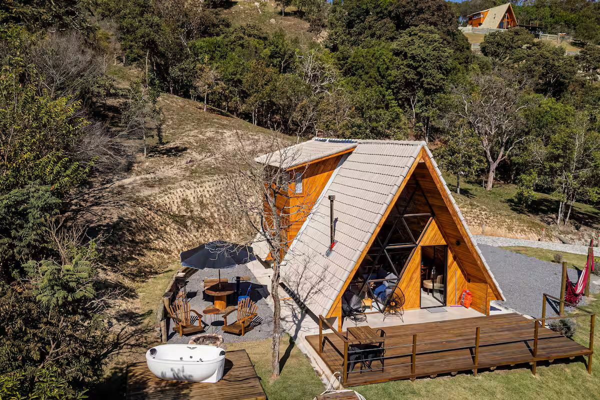

04Cabana 4 de 6 · Cunha, SP
Cabana Tuim
A única para quatro, com o pôr do sol visto da banheira.
- Hóspedes
- Até 4
- Quartos
- 2
- Camas
- Cama king e duas de solteiro
- Banheira
- Com vista para o pôr do sol
- Aquecimento
- Lareira
- Vista
- Mar de morros e pôr do sol
Por que a Tuim
A Tuim é a cabana para viajar em família ou com amigos. São dois ambientes de dormir: um quarto no térreo com duas camas de solteiro e o mezanino com cama king.
Na sala, sofá, poltrona, smart TV e lareira. A cozinha tem cooktop, forno elétrico e frigobar. Lá fora, um deck grande com mesa, espreguiçadeiras, redes, churrasqueira e fogo de chão. No fim da tarde, o pôr do sol sobre o mar de morros, visto de dentro da banheira.
Combina com
- Famílias com crianças
- Amigos viajando juntos
- Casais que querem mais espaço
O que tem na Tuim
Dormir
- Dois quartos
- Cama king no mezanino
- Duas camas de solteiro no térreo
- Roupões
Banho
- Banheira com vista para o pôr do sol
Cozinha
- Cooktop, forno elétrico e frigobar
- Churrasqueira
Clima
- Lareira
Lá fora
- Deck amplo com mesa e espreguiçadeiras
- Redes
- Fogo de chão
Sala
- Sofá, poltrona e smart TV
Em todas as cabanas: cozinha, roupa de cama, Wi-Fi, estacionamento, self check-in.

Mais de 35 avaliações, nota acima de 4,9.
É o que a Tuim soma no Airbnb. Nas Cabanas do Alto, os hóspedes costumam destacar a vista, o pôr do sol, a limpeza e a atenção das anfitriãs.
Ler as avaliações da Tuim no AirbnbReserva direta
Consulte as datas da Tuim direto com a hospedagem.
- Escolha a cabana, as datas e quantas pessoas vão.
- Envie pelo WhatsApp: a mensagem já sai pronta.
- Receba a disponibilidade e os valores do seu período e feche a reserva com a própria equipe das Cabanas do Alto.
Os valores mudam conforme a cabana, o dia da semana e os feriados, por isso a consulta é feita para as suas datas.
Prefere conversar antes? WhatsApp (12) 99102-2087
As cabanas têm cozinha? O café da manhã está incluído?
Todas as cabanas têm cozinha. O café da manhã não está incluído na diária, mas é possível encomendar uma cesta de café como serviço adicional.
Faz frio? As cabanas têm aquecimento?
Cunha é estância climática, a cerca de 950 m de altitude, e as noites de inverno podem chegar perto de 0 °C. Indaiá, Tuim, Curió e Tauá têm lareira; Biguá e Pitanguá têm aquecedor. Biguá e Tauá também têm ar-condicionado.
Aceitam pets?
Sim, pets são aceitos mediante consulta prévia, e pode haver taxa adicional. Avise ao consultar as datas.
Como funciona o check-in?
O check-in é autônomo, com senha, a partir das 14h; o check-out é até as 12h. Os detalhes de acesso são enviados depois da reserva.
Tem estacionamento e Wi-Fi?
Sim. Há estacionamento junto às cabanas, sem custo adicional, e Wi-Fi.
Como é o acesso? Precisa de carro 4x4?
Não. Segundo a hospedagem, o acesso é todo pavimentado e pode ser feito com qualquer carro ou moto.
Quais experiências posso contratar?
Decoração com flores, massagem e cesta de café da manhã, além de terapias e oficina de cerâmica sob consulta. Todas são contratadas à parte, depois da reserva, e dependem de disponibilidade.
As outras cinco
- Biguá A mais avaliada da casa. 2 hóspedes
- Pitanguá O mar de morros, com o Lavandário ao lado. até 3 hóspedes
- Indaiá Hidromassagem ao ar livre, de frente para a Mantiqueira. até 3 hóspedes
- Curió Lareira dentro, hidromassagem lá fora. 2 hóspedes
- Tauá Rede suspensa sobre o deck, olhando para a Serra do Mar. 2 hóspedes
A serra fica a cerca de três horas de São Paulo. A sua cabana, a uma mensagem.